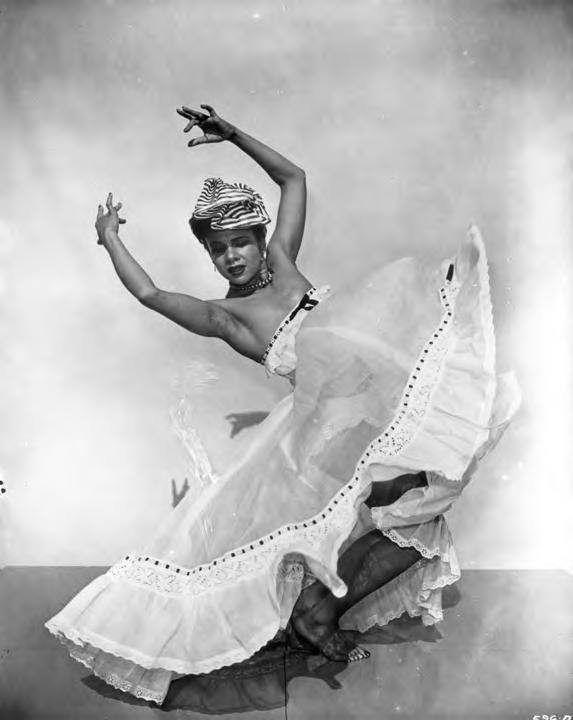

Click to enlarge.
Dancer · Anthropologist · Choreographer · Writer · Activist
The stage is set. Step into the light.

1909 – 2006
Lights rest on her photograph. Touch any of them, in any order.
Katherine Dunham in the ballet L'Ag'Ya, which premiered in 1938. Photograph. https://www.loc.gov/item/ihas.200003752/loc.gov record.
Click to enlarge.
Your floor plan records the order you chose. It is not a reconstruction of Dunham’s choreography.
Katherine Dunham (1909–2006) was a dancer, anthropologist, choreographer, writer, and activist. She brought the dances of the African diaspora to concert stages around the world, and she treated dance as a form of knowledge.
Much of that knowledge is preserved in the Katherine Dunham Collection at the Library of Congress. Its photographs, films, and programs show how her choreography, research, and activism were connected.
[Title] is built on the 8-count, the basic unit dancers use to learn and build choreography. Eight points of light rest on the photograph of Dunham, and each one opens an item from the collection. Touch them in any order, and the order you choose becomes your own 8-count: a path across a stage floor that you can keep, or dance if you’d like.
Your floor plan records the order you chose. It is not a reconstruction of Dunham’s choreography.
Jemima Wright and Ysanne Johnson, interns in the Library of Congress’s Archives, History, and Heritage Advanced (AHHA) program, created this prototype with mentorship from Senior Innovation Specialist Kimber Thomas, as part of the Connecting Communities Digital Initiative (CCDI). Through archival research, interpretive design, and digital humanities methods, they aim to make the Library’s collections more visible and to show how digital tools can bring unique historical records to a wider public.
All items are from the Katherine Dunham Collection at the Library of Congress. Rights information for each item is available through its Library of Congress record or finding aid.